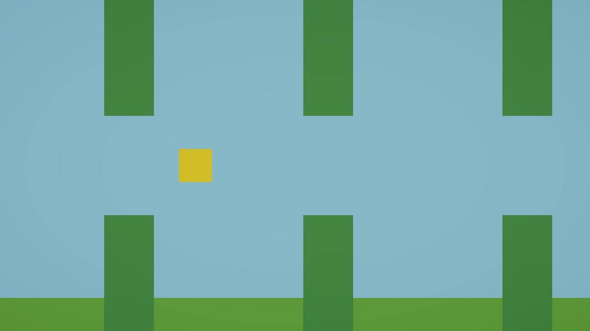

파이프가 몇 초마다
계속 나온다
12번에서는 Start() 에서 한 번만 만들었다. 계속 나오게 하려면 Update() 로 옮겨야 하는데, 그냥 옮기면 1초에 60개가 쏟아진다. “몇 초마다 한 번”을 만드는 법을 배운다.
- 1변수에 시간을 쌓아서 “몇 초마다 한 번”을 만들 수 있다.
- 2쌓은 값을 되돌리는(리셋) 이유를 설명할 수 있다.
- 3간격 × 속도 = 파이프 사이 거리 를 자기 말로 설명할 수 있다.

Update 로 옮기면 60개가 쏟아진다
가장 먼저 떠오르는 방법은 Start() 를 Update() 로 바꾸는 것이다. 하지만 04번에서 배운 것을 떠올려 보자.
Start()Play 직후 딱 1번 → 파이프 1개Update()매 프레임 → 1초에 60개, 10초면 600개필요한 건 그 사이다. “매 프레임 실행되되, 실제로 만드는 건 2초에 한 번” 이어야 한다.
Start 를 Update 로만 바꿔 Play 해 보자. 파이프가 벽처럼 쏟아진다. 한 번 보고 나면 왜 시간을 재야 하는지 설명이 필요 없어진다.
시간을 재는 법
Unity 에는 “2초마다 실행” 같은 명령이 따로 없다. 직접 시간을 쌓아서 재야 한다. 방법은 세 단계다.
timer 에 이번 프레임이 걸린 시간을 더한다timer 가 목표(2초)를 넘었는지 if 로 확인한다timer 를 0 으로 되돌린다Time.deltaTime 이 또 나온다 — 이번엔 더한다
07번에서는 deltaTime 을 곱했다. 이번에는 더한다.
속도 * Time.deltaTime “이번 프레임에 얼마나 움직일까”timer += Time.deltaTime “지금까지 몇 초가 흘렀나”deltaTime 은 “이번 프레임이 걸린 시간”이다. 그걸 계속 더하면 흘러간 시간의 합이 된다. 1/60초짜리를 60번 더하면 1초다.
timer = 0f; 를 안 쓰면 timer 가 계속 커진 채로 남는다. 한 번 2를 넘고 나면 그 뒤로는 매 프레임 조건이 참이 되어, 결국 1초에 60개가 쏟아진다. Update 로 옮기기만 한 것과 똑같아진다.
왜 timer 에는 public 을 안 붙이나
09번의 isDead 와 같다. public 은 “사람이 조절할 값”에만 붙인다. timer 는 코드가 알아서 쌓고 되돌리는 값이라 Inspector 에 보일 이유가 없다. 반면 spawnInterval 은 난이도를 조절하는 값이므로 public 이다.
간격 × 속도 = 거리
파이프가 나오는 시간 간격을 정하면, 화면에서의 거리 간격이 따라서 정해진다. 왜 그럴까?
파이프는 나오자마자 왼쪽으로 흘러간다. 다음 파이프가 나올 때까지 앞 파이프는 그동안 이동한 거리만큼 가 있다.
아래에서 직접 바꿔 보자. 간격을 줄이면 촘촘해지고, 속도를 올리면 오히려 벌어진다.
코드를 고친다
using UnityEngine;
public class PipeSpawner : MonoBehaviour
{
public GameObject pipePrefab;
public float spawnInterval = 2f;
float timer = 0f;
void Update()
{
timer __ Time.deltaTime;
if (timer __ spawnInterval)
{
Instantiate(pipePrefab, new Vector3(11f, 0f, 0f), Quaternion.identity);
_______________
}
}
}timer 뒤원래 값에 더해서 다시 넣는다. 06번에서 배웠다if 안“목표를 넘었거나 같으면”. 09번의 비교 연산자정답 확인
void Update()
{
timer += Time.deltaTime;
if (timer >= spawnInterval)
{
Instantiate(pipePrefab, new Vector3(11f, 0f, 0f), Quaternion.identity);
timer = 0f;
}
}timer += Time.deltaTime;매 프레임 흘러간 시간을 쌓는다if (timer >= spawnInterval)2초가 찼는지 본다timer = 0f;다시 0부터 센다. 이 줄이 없으면 그 뒤로 매 프레임 참이 된다확인한다
Spawn Interval 을 1 로 바꾸면 촘촘해진다이 교재를 만들면서 실제로 잰 값
문항 1 · 되돌리기를 빼먹으면
timer = 0f; 를 안 쓰면 어떻게 되나?
timer 는 계속 커지기만 한다. 2를 넘는 순간부터 조건이 영원히 참이 되어 매 프레임 하나씩 만든다. 1초에 60개다. Update 로 옮기기만 한 것과 똑같아진다.문항 2 · 속도를 올리면
간격은 2초 그대로 두고 파이프 Speed 만 3 → 6 으로 올리면 파이프 사이 거리는?
2 × 6 = 12 칸이다. 빨라지면 같은 2초 동안 더 멀리 가기 때문이다. 화면 가로가 17.8칸이니 화면에 2개도 안 보이게 된다. 위 실험에서 슬라이더를 움직여 확인해 보자.막혔을 때
timer = 0f; 를 빼먹었다. 또는 Start 를 Update 로 바꾸기만 했다Start() 에 있다. Update() 로 옮기자Time.deltaTime 대신 다른 값을 더했을 수 있다. timer++ 는 프레임 수를 세는 것이지 시간이 아니다Timer 칸이 보인다timer 에 public 을 붙였다. 코드가 관리하는 값이므로 떼자